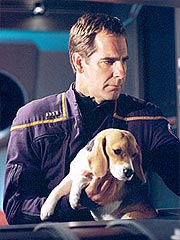
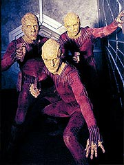
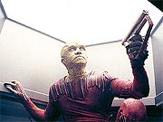
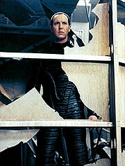
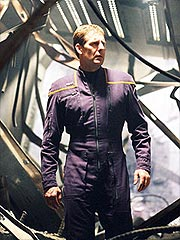
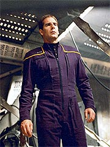

|
MANCHETE
DO EPISÓDIO
Segmento
constrói o caráter do capitão
e põe fogo na Guerra Fria Temporal
Episódio
anterior | Próximo
episódio
Sinopse:
A Enterprise obtém permissão para
visitar uma colônia de uma raça chamada Paraagan. Malcolm Reed
recebe todas as instruções para levar um shuttlepod à superfície
sem iniciar a combustão de toda a atmosfera pela alta concentração
de tetrazina no ar. Apesar de seguir os procedimentos à risca,
uma explosão subitamente ocorre, incendiando a atmosfera. O
shuttlepod volta à nave, mas já não há mais qualquer sinal dos
3.600 Paraagans que habitavam o planeta --a queima da atmosfera
matou a todos.
Archer fica simplesmente desolado, assim como os demais
tripulantes. "Nós viemos aqui para conhecer essas pessoas, não
matá-las", ele disse mais tarde ao almirante Forrest pelo
subespaço. Reed garante a seu capitão que todos os sistemas do
shuttlepod estavam funcionando e que todos os protocolos foram
seguidos à risca, mas as leituras da atmosfera indicam que houve
um vazamento de plasma da pequena nave, causando a catástrofe.
 O
capitão reporta os resultados da investigação ao almirante
Forrest, que se encarrega de avisar aos Paraagans. Mais tarde, é
Forrest quem volta a contatar Archer, com más notícias. O Alto
Comando Vulcano usou o incidente como argumento contra a missão
da Enterprise. Pressionado, o governo terrestre cedeu --a missão
está cancelada. Archer deve trazer a nave de volta à Terra,
antes se encontrando com uma nave Vulcana para despachar T'Pol e
Phlox.
Archer comunica a notícia a T'Pol e Trip. O engenheiro fica
revoltado e exige uma ação contrária de Archer, mas ele está
desolado demais para reagir. Mais tarde, T'Pol também tenta
convencer o capitão a defender a missão, dizendo que também
intercederia junto ao Alto Comando em favor da Enterprise.
Enquanto isso, os outros tripulantes discutem o que será de seu
futuro fora da nave. Trip fica irritado com a indiferença de
Phlox às más notícias, e Hoshi e Mayweather trocam idéias
sobre o que será de suas vidas.
Ainda desolado, Archer resolve ir dormir. Então, algo muito
estranho acontece. Ele se vê em seu apartamento em San Francisco,
dez meses antes de onde estava e um dia antes do Klingon Klaang
sofrer seu acidente em Broken Bow. Desorientado, ele se certifica
de que está mesmo no passado e encontra Daniels, o misterioso
tripulante da Enterprise que havia se revelado uma entidade do
futuro e teria sido morto por Silik meses atrás.
 Daniels
diz que trouxe Archer ao passado para lhe tranferir informações
importantíssimas. Ele afirma que o acidente com os Paraagans não
deveria ter acontecido --seria fruto de mais uma intervenção dos
Sulibans para alterar a história do futuro e impedir a
continuidade da missão da Enterprise. Para corroborar suas
informações, Daniels revela a Archer como obter comprovação do
que ele está dizendo: ele oferece ao capitão as coordenadas de
uma nave Suliban que conteria um disco de dados provando a
sabotagem no shuttlepod.
Adicionalmente, Daniels instrui Archer em como criar um sistema
para contornar a camuflagem das naves Sulibans e diz que é possível
conseguir todas as plantas da nave em questão por meio de um
aparelho que ficou guardado em seu antigo alojamento a bordo da
Enterprise. O capitão volta à época atual e convoca uma reunião
da tripulação sênior no meio da madrugada. Ele comunica a todos
que a Enterprise não foi responsável pelo acidente com os
Paraagans e pede a Trip que construa o equipamento que permitirá
a detecção das naves Sulibans. Depois disso, ele vai com Reed até
os antigos aposentos de Daniels para coletar as plantas da nave
Suliban.
Ao encontrar a nave onde Daniels disse que estaria, Archer, Trip e
T'Pol usam um shuttlepod para ir a bordo e recuperar o disco com
os dados. A missão é bem-sucedida e Hoshi consegue abrir os
arquivos, mostrando todos os passos da sabotagem Suliban ao
shuttlepod, feita na atmosfera do planeta-colônia. Archer volta a
contatar o almirante Forrest, dando as boas notícias. Forrest
fica satisfeito, mas instrui Archer a permanecer em curso para
encontrar a nave Vulcana, enquanto ele transmite as novas informações
às autoridades.
 Archer
volta a falar com T'Pol sobre sua experiência de viagem no tempo.
Embora ela não consiga fornecer uma explicação razoável para o
fato de o capitão ter tantas informações sobre a tecnologia, a
nave Suliban e a sabotagem de antemão, ela se recusa a acreditar
na história de Archer. Segundo ela, cientistas Vulcanos provaram
que viajar no tempo era impossível. Archer fica frustrado por não
poder contar com sua oficial de ciências para ajudar a solucionar
o mistério.
Enquanto isso, Silik reporta a seu misterioso instrutor no futuro
as últimas ocorrências. Ele, por sua vez, ordena o Suliban a
capturar Archer. Dezenas de naves Sulibans partem então atrás da
Enterprise. Ao se ver cercado, o capitão até ameaça tentar
reagir, mas Reed confirma que será impossível vencer uma batalha
naquelas condições. Silik entra em contato e exige que Archer se
entregue. Caso ele o faça, a Enterprise será poupada.
Sem outra escolha, Archer decide aceitar os termos do Suliban. Ele
deixa T'Pol no comando e pede para que ela mantenha a mente aberta
quanto à possibilidade de viagens temporais. Trip ameaça
protestar, mas o capitão pede apenas que ele faça o que puder
para ajudar T'Pol e o resto da tripulação. O capitão entra então
no turboelevador, pronto para deixar a nave.
Para sua surpresa, entretanto, ele não se vê mais na Enterprise,
mas em uma construção totalmente destruída. A bordo da nave,
Silik acusa Archer de trapacear e de não se entregar, decidindo
por destruir a nave, apesar das alegações de T'Pol de que seu
capitão não está mais a bordo.
De fato, o capitão está em um mundo totalmente desolado. Eis que
surge Daniels, dizendo que o trouxe para o século 31. Entretanto,
segundo ele, a vinda de Archer mudou toda a história, trazendo
destruição e caos para o futuro. O capitão então decide que o
melhor seria Daniels devolvê-lo ao século 22, onde ele se
entregaria a Silik. Mas Daniels diz que isso não é mais possível:
toda a tecnologia que permitiria enviá-lo ao passado já não
existe mais, dada a destruição do local. Em um beco sem saída,
Archer e Daniels observam uma desoladora paisagem de arranha-céus
totalmente deteriorados e abandono.
Comentários:
"Shockwave" junta a fome com a vontade
de comer. Além de nos apresentar mais uma aventura ligada à
intrigante temática da Guerra Fria Temporal, nos dá pela
primeira vez em muito tempo (e talvez desde o piloto "Broken
Bow") uma atuação realmente sólida e consistente
do capitão Jonathan Archer.
 Todas
as incertezas e os erros cometidos pelo capitão ao longo da
primeira temporada da série chegam a um clímax aqui: após uma
catástrofe aparentemente causada pela Enterprise, 3.600 alienígenas
são mortos e a missão da nave da Terra é sumariamente cancelada
pelas autoridades. Desolado pela morte injustificável dos colonos
e abalado pela sequência de confusões pelas quais sua tripulação
passou no último ano, Archer começa a achar que de fato ele não
deveria estar ali.
Todo o peso da responsabilidade do capitão desaba sobre ele, e
Jonathan sente não só que desapontou sua tripulação e seus
superiores na Terra, mas que também se mostrou incompetente para
mostrar aos Vulcanos que a raça humana estava pronta para ter voz
ativa na comunidade galáctica. Incapaz de reagir, ele dá espaço
para que T'Pol e Trip mostrem seu valor, reforçando a idéia de
unidade que existe entre os três principais personagens da série.
O drama que envolve o capitão é sólido, a caracterização
(tanto no roteiro como na atuação de Scott Bakula) é coerente e
convincente e as circunstâncias são igualmente bem trabalhadas,
mostrando como a tripulação reagiu à catástrofe e ao
cancelamento da missão.
Ainda abalada pelo forte teor dramático desse início
(prejudicado apenas pela primeira atuação deslocada de Vaughn
Armstrong como o almirante Forrest, que parece aqui mais uma
mistura de bebê chorão com o paizão de Archer ao conversar com
o capitão, em vez de seu oficial superior e o responsável por
Archer ter o comando da primeira nave estelar de longo alcance da
Terra), a audiência é subitamente mergulhada em uma intensa
aventura espaço-temporal, quando Archer é atirado para dez meses
no passado e reencontra Daniels, um personagem que todos
consideravam morto havia seis meses.
A breve estadia de Archer no passado é interessante e
bem-realizada tecnicamente, com direito a cenografia completa do
quarto do capitão e uma vista noturna da cidade de San Francisco.
De quebra, oferece novos elementos para a continuidade de uma história
que, de outro modo, já estava chegando a um beco sem saída.
 Revigorado
pela revelação de que a Enterprise não foi culpada pela morte
dos alienígenas, Archer vê uma chance de se redimir e de expor a
sabotagem Suliban, salvando a pele da Enterprise e mostrando mais
uma vez que a humanidade estaria pronta para lidar com as mais
intrincadas confusões do espaço exterior. O que ninguém pára
para pensar, mas que é uma grande jogada dos produtores (resta
saber se é intencional), é a facilidade com que Daniels consegue
manipular Archer para fazer com que ele execute exatamente o que a
entidade do futuro gostaria. Dado que em "Cold
Front" são os Sulibans e Silik que salvam a
Enterprise da destruição e que Daniels nada teria feito para
evitá-la, começa a se desenhar uma intrigante aventura temporal
para Archer e cia, lembrando os bons tempos da mitologia de
"Arquivo-X". O potencial sem dúvida está plantado.
Resta saber se os produtores saberão usá-lo.
Apesar da transição clara do drama para a aventura no meio do
episódio, ainda há um excelente trabalho acerca dos personagens,
com especial atenção para Archer. Uma menção honrosa vai para
a cena em que o capitão tenta convencer T'Pol de que viajou no
tempo. Fica muito claro para a audiência que Archer respeita as
opiniões de sua primeiro-oficial Vulcana e que ele gostaria de
ter alguma credibilidade junto a ela, para que ela possa ajudá-lo
a esclarecer todo esse mistério.
Mas a melhor cena do episódio provavelmente é a em que Archer se
vê sem alternativas e decide se entregar a Silik. A atuação de
Bakula se sobressai mais do que em qualquer momento da série até
aqui. Lentamente, a cada passo pela ponte, sentimos que o capitão
Archer está aceitando o fato de que o fim da linha pode ter
chegado para ele e que é sua responsabilidade fazer todo o possível
--inclusive sacrificando sua vida-- para que a Enterprise possa
continuar. Naquele momento, chega o verdadeiro teste para Archer.
O seu "Kobayashi Maru", por assim dizer. E, apesar da
situação simplesmente remoê-lo por dentro, o capitão é capaz
de tomar a decisão certa, abandonando a nave, e de manter o senso
de coesão da tripulação, agindo como um verdadeiro líder (seu
discurso para T'Pol e Trip até lembrou o registro que o capitão
Kirk deixou para Spock e McCoy em "The Tholian Web",
do terceiro ano da Série Clássica). Nota dez para Archer
e dez para os roteiristas. A cena é tocante, significativa, bem
executada e abrilhantada pela atuação de Bakula, nem exagerada
nem sutil demais, em um momento tão difícil e crucial.
 Claro,
Archer acaba não indo parar na nave de Silik, mas no século 31.
E lá temos uma revelação ainda mais bombástica --o futuro foi
drasticamente alterado e não há meio de devolvê-lo ao século
22. É o fim da linha para o capitão da primeira nave estelar
Enterprise? Enquanto isso, um enfurecido Silik decide destruir a
nave de Archer. As naves Sulibans miram suas armas todas para o núcleo
de dobra da Enterprise. É o fim da primeira missão interestelar
humana de longo alcance? Dois aparentes becos sem saída, um no século
31, outro no século 22, não poderiam ser um melhor cliffhanger
para um episódio crucial no desenrolar de uma Guerra Fria
Temporal.
Infelizmente, quanto maior a altura, maior o tombo. Fica a dúvida
de que os produtores possam se sair com uma solução espetacular
para o episódio de fechamento da primeira temporada de Enterprise.
Quem viver, verá.
Citações:
Archer - "This has
got to be the first time a Vulcan has ever attempted to cheer up a human."
("Essa deve ser a primeira vez que um Vulcano tentou animar um
humano.")
Archer - "If you're trying to tell me the last ten months was
dream, I’m not buying it."
("Se você está tentando me dizer que os últimos dez meses foram
um sonho, não estou engolindo.")
Daniels - "He did --in a manner of speaking."
("Ele matou --de um certo modo.")
Archer - "Can't you ever give a straight answer?"
("Você nunca pode dar uma resposta direta?")
Daniel - "It depends on the question."
("Depende da pergunta.")
Archer - "Well, good for the Vulcan Science Directorate."
("Bem, que bom para o Diretório de Ciência Vulcano.")
Trivia:
 Segundo relatos, o episódio foi filmado do dia 27 de março de 2001 a 8
de abril. Todas as cenas foram feitas em estúdio.
Segundo relatos, o episódio foi filmado do dia 27 de março de 2001 a 8
de abril. Todas as cenas foram feitas em estúdio.
"O episódio final, com o qual estamos muito felizes, fala da
temporada inteira que veio antes dele", diz o produtor-executivo,
co-criador da série e roteirista do episódio Brannon Braga. "O
Comando da Frota Estelar e o Alto Comando Vulcano decidem juntos que a
missão é um fracasso. Archer, claro, é quebrado pela culpa. E é
T'Pol quem diz que ele precisa lutar contra essa decisão e que ela está
disposta a lutar com ele. O relacionamento dos dois realmente chega a
termo emocionalmente, onde pela primeira vez ela fica ao lado dele como
capitão em vez de combatê-lo. O episódio se torna uma luta para
salvar a Enterprise e manter a missão, então é bem sentimental e
empolgante."
Braga também comentou o conteúdo da Guerra Fria Temporal no episódio.
"O episódio lida muito com isso, assim como o primeiro do próximo
ano, e você aprenderá muito mais sobre isso."
Depois de três aparições como o comandante de Silik no futuro
distante, o ator James Horan está convencido agora de que ele não é
da turma "do bem". "Meio que soa como um cara mau,
especialmente do último roteiro que recebi, o episódio final da
primeira temporada."
John Fleck (Silik) e James Horan fazem sua terceira aparição na série
juntos. O primeiro foi "Broken Bow"
e o segundo, "Cold Front".
Vaughn Armstrong faz sua sexta aparição como o almirante Forrest. O
ator já acumula 11 papéis em Jornada nas Estrelas. Matt Winston
retorna como Daniels, que apareceu uma vez em "Cold
Front". Stephanie Erb interpretou Liva, em "Man
of the People", de A Nova Geração.
É a primeira vez na história de Jornada nas Estrelas que a
primeira temporada de uma série termina com um cliffhanger explícito
(com direito a "to be continued" no fim da temporada).
Ficha
técnica:
Escrito por
Rick Berman & Brannon Braga
Direção de Allan Kroeker
Exibido em 22/05/2002
Produção:
026
Elenco:
Scott
Bakula como Jonathan Archer
Jolene Blalock como
T'Pol
John Billingsley
como Phlox
Anthony Montgomery
como Travis Mayweather
Connor Trinneer como
Charlie 'Trip' Tucker III
Dominic Keating como
Malcolm Reed
Linda Park como Hoshi Sato
Elenco convidado:
John Fleck como Silik
Matt Winston como Daniels
Vaughn Armstrong como almirante Forrest
James Horan como figura humanóide
Stephanie Erb como recepcionista
David Lewis Hays como tripulante tático
Episódio
anterior | Próximo
episódio
|